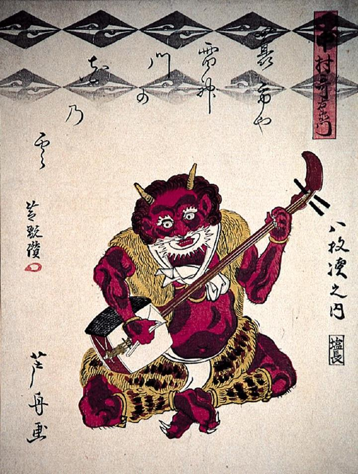

← 图鉴索引

三味線を弾く雷神。その姿は赤鬼で、虎皮の上着、腰巻、脚絆をつけている。
著作者：芦舟／出典：親書誌：A80_prague_0005：（三味線を弾く雷神；シャミセンヲヒクライジン）／日付：2011／資源識別子：A80_prague_0005_0001_0000
Copyright (c)2010- International Research Center for Japanese Studies, Kyoto, Japan. All rights reserved.